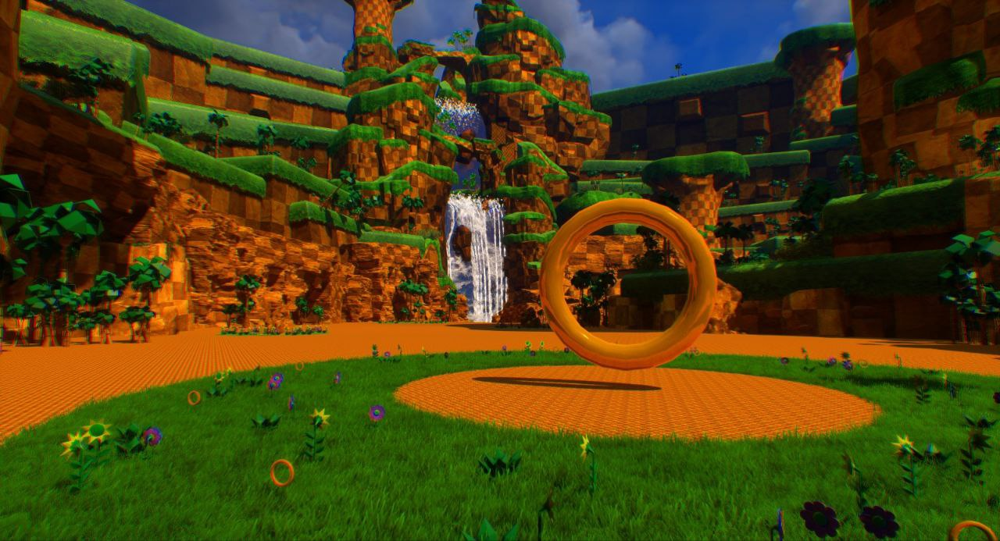
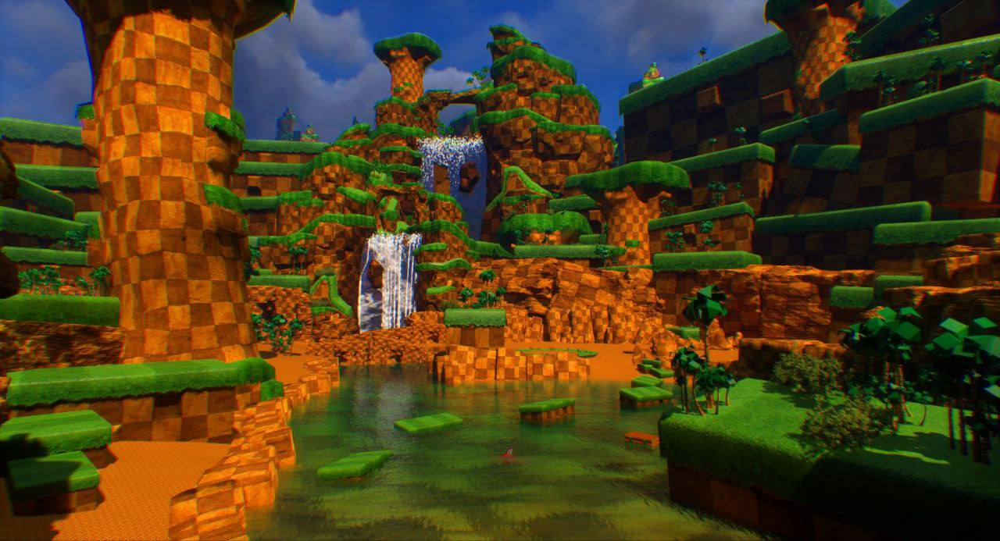
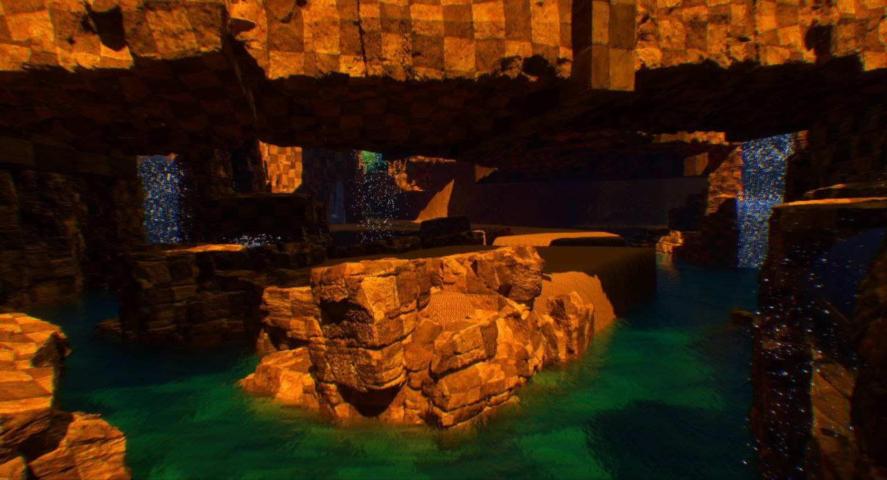
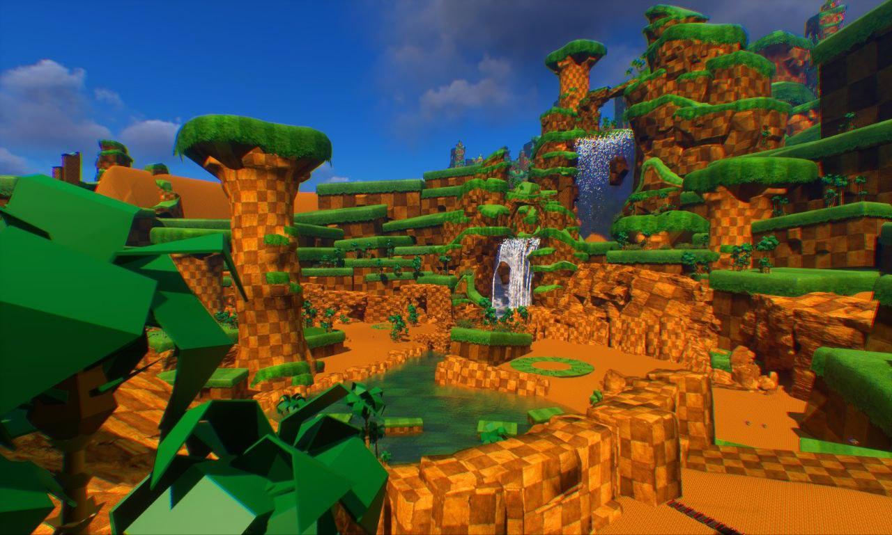
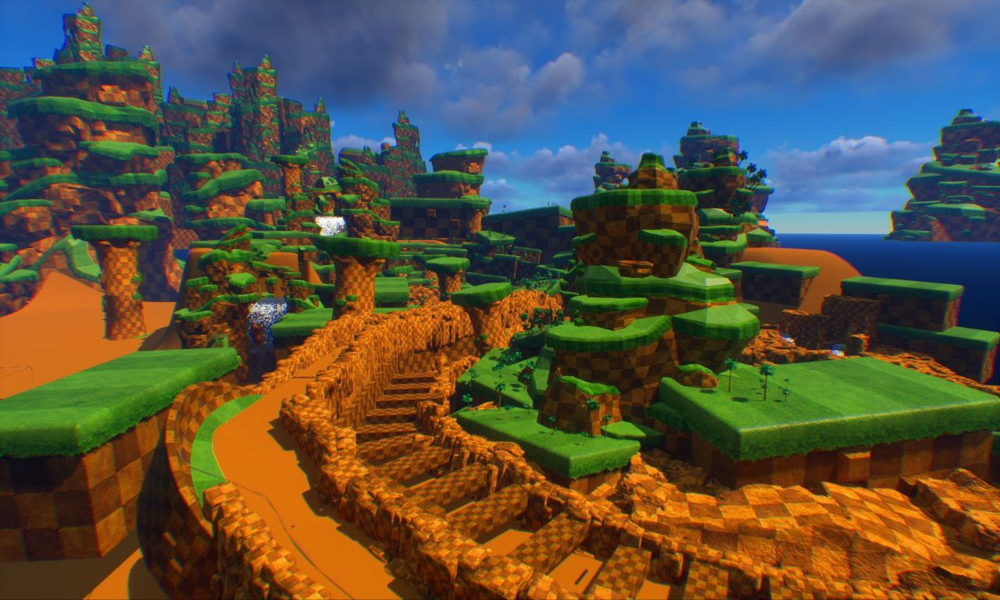
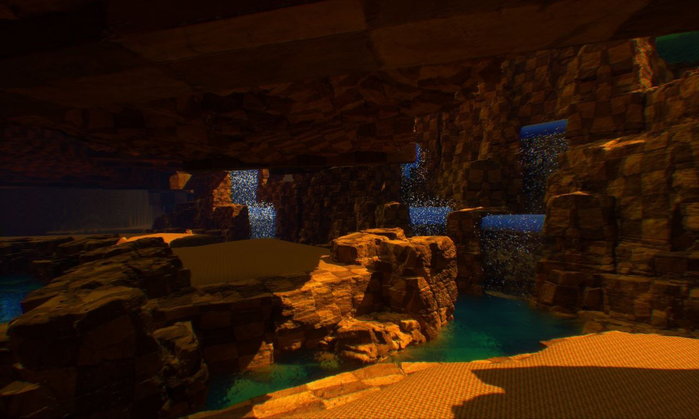
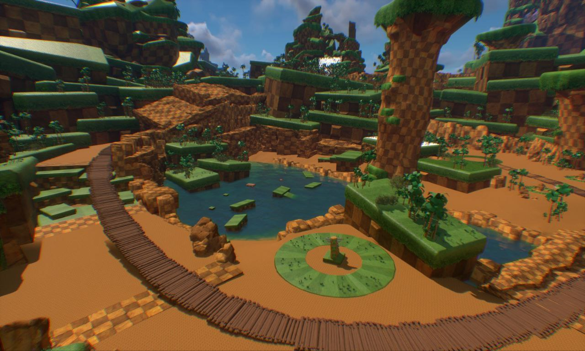

Présentation
Fangame UE5 Level Design Physics
MechaDrive est mon playground Sonic sous Unreal Engine 5. J’ai reconstruit une première section de niveau façon “Green Hill” pour tester le momentum, les loopings, ressorts, rings et caméras.
État du projet : la première zone est jouable et visuellement avancée, mais le développement est mis en pause car j’ai une autre priorité de production. Le cœur reste fonctionnel grâce à un template maison modifié, prêt à reprendre quand j’aurai du temps.
Captures (WIP)
Level art, lighting, eau stylisée, grottes et verticalité.







Tech stack
- Unreal Engine 5 (Blueprints + volumes spline)
- Assets stylisés maison + quelques proxies low poly
- Material functions : herbe bicolore, roche damier, eau
- Particules Niagara : chutes, embruns, bulles
- Post-process custom : vignette + chroma split subtil
Roadmap (si reprise)
- Pass gameplay : timers, score et routes “A/B/S”
- Boss arena courte + FX supplémentaires
- Optim : HLOD + Nanite pour gros volumes
- Portage controller manette + options caméra